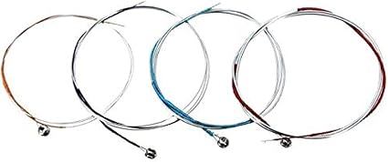

Violin Strings

Violin strings have a huge effect on the instrument's brilliance, warmth and response. From bright solo tones to sweet orchestral sounds, the right set lets every violin sing at its best.
Types of Violin Strings
Steel Core Strings
Bright, clear and long-lasting, with quick response and good tuning stability. Ideal for beginners and fiddle players.
- Price range: from $20 to $80
Synthetic Core Strings
A warm, full tone with a smooth feel, close to gut but more stable. The most popular choice for serious players.
- Price range: from $40 to $150
Gut Core Strings
A rich, complex tone favoured for baroque and historical performance. They need frequent tuning.
- Price range: from $80 to $250+
Fractional Size Sets (1/2, 3/4)
Sets made for smaller violins, designed to give young students an easy-to-play sound.
- Price range: from $15 to $60
Popular Brands
- Thomastik-Infeld
- Pirastro
- D'Addario
- Larsen
- Jargar